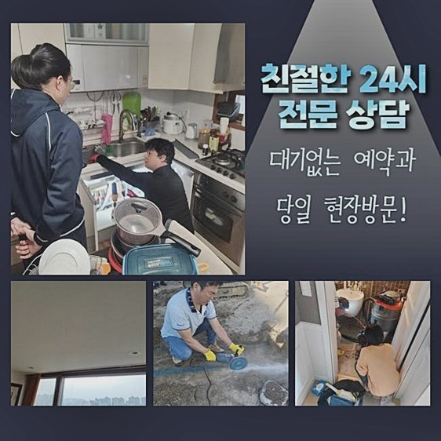
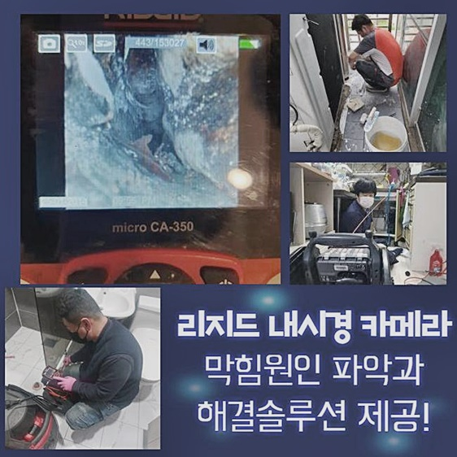
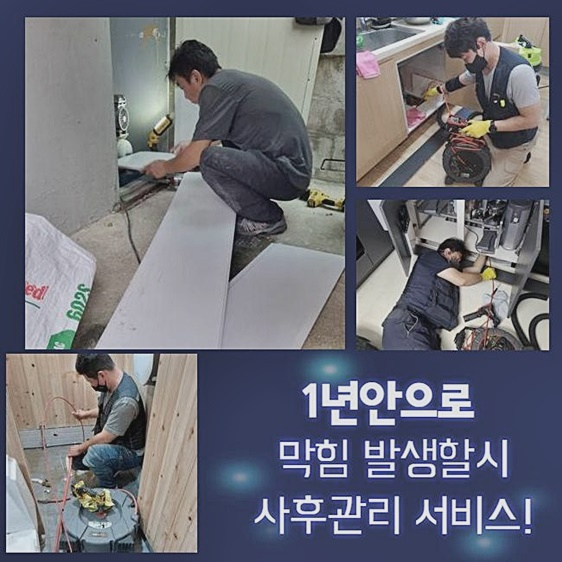
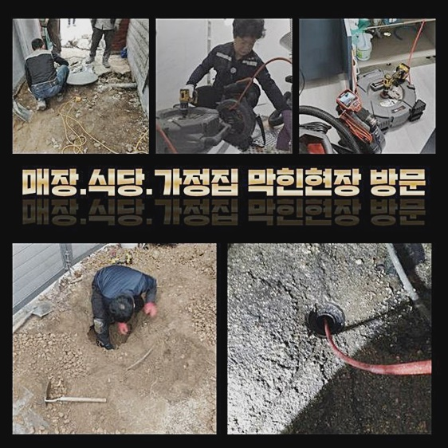
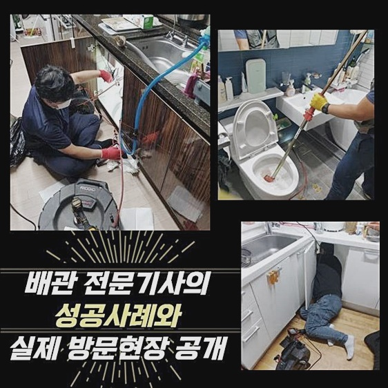
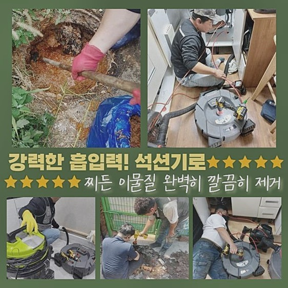
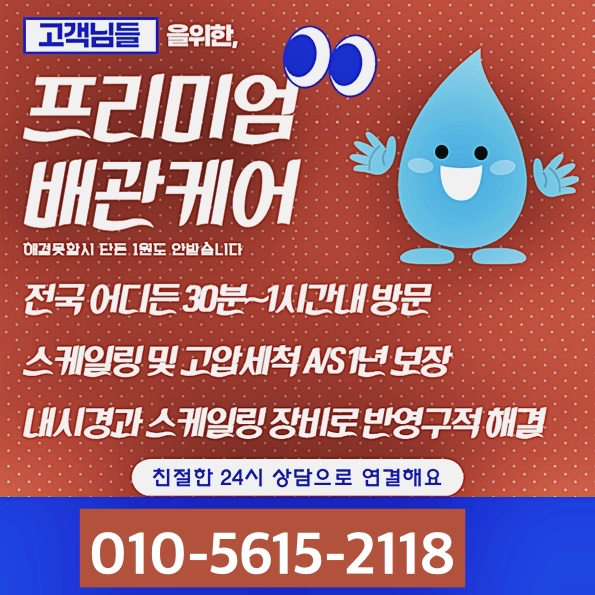

🏠 수원 평동대변기뚫음 서둔동 집수정청소 배관공사
용인시 처인구 배관막힘 전문 시공 후기

📋 작업 개요
- 위치: 용인시 처인구, 수원시 영통구, 화성시 동탄
- 서비스 유형: 배관막힘, 배관수리, 고압세척, 내시경점검
- 작업 일시:
- 업체명: 하수구수사대 (010-5615-2118)
🔍 문제 상황
하수라인이 막혀버렸다면 배관안을 볼 수 있는 기기를 이용한 점검으로 꽉 막혀버린 배수라인을 물이 흐르게 하는 작업들이 이루어집니다
문제 지역의 내부라인 외에 외벽으로 나와있는 하수시스템이 통수되지 않는 작업현장은 조속하게 수리과정이 진행됩니다
수원 평동대변기뚫음 서둔동 집수정청소 배관공사
겉으로 돌출된 배수관은 관통 자체로도 단단한 모양이고 전체라인이 길게 자리잡기에 점검시작부터 통수시키는 프랙스샤프트기기 사용까지 쉽지 않은 과정이 됩니다
앞의 문제처럼 건물 외벽에 설치한 문제로 파악하셨다면 다양한 경험이 있는 전문가와 정확한 수리작업이 요구되므로 검증된 전문업체를 통하여 현장의 문제사항을 문의하시기 바랍니다
오늘 연락받은 문제사항은 주차지역에 매립되어있는 메인 하수라인이 순환하지 못하는 문제였습니다
첫번째로 주된 배관시스템이 연결되어 있는 바깥쪽 하수라인에대한 점검작업들을 시작해보았습니다
관리업체 이야기로는 외부에 위치한 배관라인에서 주된 배관으로 오는데까지 전체 모두 막혀서 발생하는 문제가 매우 심하다고 설명하셨습니다

🔎 원인 분석
💡 전문가 진단: 정밀 진단 장비를 사용하여 슬러지의 고착 여부를 판명하고 타격/세척 작업을 실시했습니다.
오염원의 특징을 규명 해보았습니다
이후로는 천장에서 작업해야 되는 배관작업을 시작해야 했으나 작업위치가 높은탓에 작업이 가능한 반경들이 확보불가능 상태라
안전하게 일 할수있는 환경들이 만들어져야 진행도 문제없이 이루어집니다
첫번째로 천장근처 있는 배관은 복잡했는데 막힌원인을 찿아내고, 해당부위로 안을 보는 기계를 사용하여 배관의 체증상태를 확인하고 오염원의 특징을 규명합니다
진행과정에서 배관의 안쪽으로 안을 볼수있는 선들을 이용하려면 배관에대한 작게 진입위치를 뚫어냅니다
구멍을 내는 공구를 활용하여 장비가 진입할수있는 최소의 크기로 뚫는 작업 이후 바로 내시경 장비를 넣어서 모든 라인의 스케일링과 파악을 진행했습니다
모든작업이 완벽하게 끝난후에 타공위치에 관하여 전문가의 깔끔한 마무리로 추후 발생할 수 있는 기타현상에 큰걱정 하지않으셔도 돼요
이와같이 배관의 내부 노폐물의 상태를 확인해봤습니다
예상대로 본관의 여러구간들에 노폐물이 축적된 상황이었고 건물외부 하수시스템으로 쭉 이어진 장소까지 딱딱하게 변형된 상당한 양의 찌꺼기가 이러한 상황을 야기시켰습니다

🔧 작업 과정
하수라인의 안쪽면에 불순물이 엉겨붙어 층을이룬 하수배관 침전물은 그위로 자꾸 불순물이 추가적으로 더해지며 두터워지고 오수가 지나가는 배관들이 서서히 조여지며 결국 막혀버립니다
스케일링이 가능한 장비로 단단한 찌꺼기를 파쇄하며 배관을 청소합니다
안의 상황들을 파악해보니 본관배수라인이 연결된 관의 가장자리 가까운 곳에 상당한 양으로 형성된 침전물을 확인했습니다
특히 많은 양의 오염수가 지나가는 본관과 건물밖의 하수라인 내벽에는 쉽게 오염원이 축적되고 석회석으로 변한 슬러지들 상태는 엄청나게 단단하고 완전밀착되는 성질로 순환을 방해합니다
작업을 통해 하수구에 대한 샤프트기기 작업들로 또다시 같은 문제가 발생하는 경우들이 없겠죠
타공이 완료된 주요배관으로 안을 불수있는 케이블을 투입시키고 종합적인 문제를 진단하고 플랙스샤프트 장비를 쓰려고보니 오늘처럼 관경이 크게 만들어진 배수관은 보편적인 기계로는 진행이 힘듭니다
왜 그러냐 하면 전방위적으로 스케일링 과정이 진행되는데 플랙스샤프트나 석션장치는 일정구간마다 세밀한 스케일링작업이 진행되기때문에 사이즈가 크게나온 하수관에 일반기기 사용은 장시간의 노력이 요구되게 됩니다
해당케이스에는 높은압력으로 세척이 가능한 기계를 써서 꽉 막힌 배관을 해결합니다
전체 라인에 따라서 분사구의 위치를 정해두고 기기의 강한 힘으로 분사시키면서 이물질이 붙어있는 내벽과 배관의 내부를 깨끗하게 씻어내는 일이 효과적인 해결일처리입니다
본격화된 고압작업이 시행됨에 따라 분사구를 다방면으로 쏘아대고 강한 압의 물로 배관 내벽의 침전물을 파괴합니다
퇴적된 오염원도 매우 안좋은 현장이고 중요 하수관의 특성상 노폐물의 양도 많았기에 그냥 방치해 두었다면 막힘과 악취가 점점 잦아질 것으로 예측 되었습니다
반복적으로 동일한 불편이 생기지않게 전용 기기를 활용하여 잔여 오염원이 없도록 구석구석 높은 압력으로 세척을 마무리합니다
이처럼 모든 작업이 끝나게 된후 구멍을 내어놓은 중요 하수관의 뚫려있는 부위를 정상적으로 메우게끔 진행한 이후 오늘의 작업을 종료할수 있었습니다
이후에 배수관 문제로 어려움이 생기지 않게 꼼꼼하게 타공을 했던 부분을 메워두었고 앞선 과정으로는는는 물들이 흘러가는 데 있어서 불편함은 일어나지 않도록 작업을 완료했어요


✅ 작업 완료
그후로는 혹시 또다른 이상이 있는지 막히는 현상없이 잘되는가를 확인했고 본관에서 외벽의 하수시스템까지 막힘없이 이상발견 직후 물이 흐르는지 전체 모두 확인하였습니다
배관내벽의 침식이 생활속 오염물로 문제가 야기된다면 메인 배수관부터 건물밖의 하수라인까지 배수가 전부 힘들어짐으로 최대한 빨리 업체를 알아보시는게 바람직합니다
배관의 비정상적인 오류는 구비되어있는 장비로 급히 처리하지 마시고 전체적인 탐색을 해보고 해결이 가능한 기기를 써서 점검이후 플랙스샤프트 기기등을 적용하는것이 안전하지요
전문적인 케어를 원하신다면 편안한 마음으로 의뢰를 맡겨주세요




⚠️ 하수구 배관 막힘 예방 및 관리 가이드
- ✅ 머리카락, 비닐, 물티슈 등 물에 분해되지 않는 이물질은 절대 흘려보내지 마세요.
- ✅ 기름기 많은 식기는 설거지 전 키친타올로 먼저 기름때를 닦아내세요.
- ✅ 주기적으로 배수구에 뜨거운 물을 가득 부어주어 유지방 고착을 방지하세요.
- ✅ 작업 후 1년 이내 재발 시 무상 A/S 보증 서비스를 제공합니다.
💡 핵심 정리
- 확실한 장비 작업(내시경 점검 및 샤프트 스케일링)으로 원인을 뿌리 뽑습니다.
- 작업 후 1년 이내에 동일한 부위 재발 시 100% 무상 A/S 서비스를 보장합니다.
- 서울 · 경기 · 인천 전 지역에 24시간 언제든 긴급 출동할 수 있도록 항시 대기 중입니다.
❓ 자주 묻는 질문 (FAQ)
🚨 용인시 처인구 배관막힘 문제로 고민이신가요?
정확한 원인 진단과 확실한 시공으로 재발 없는 해결을 약속드립니다.
24시간 긴급 출동 | 서울 · 경기 · 인천 전지역 | 1년 내 재발 시 무상 A/S